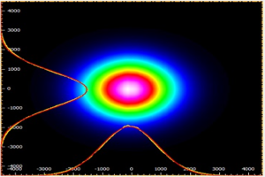

This calculator will help you to compute the Spatial distribution of Gaussian beams
$w_0$ is the laser waist spot radius, $\theta$ is the far-field divergence angle, $\lambda$ is the light wavelength, $Z_R$ is the Rayleigh length, $w_z$ is the spot radius at z from the waist spot, and $R_z$ is the radius of curvature of the wave surface.